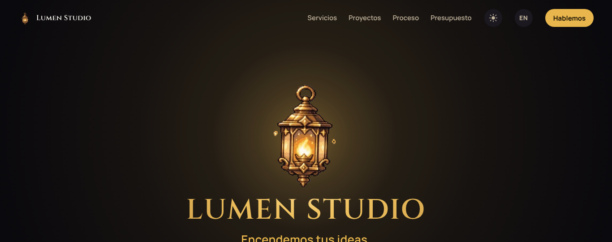
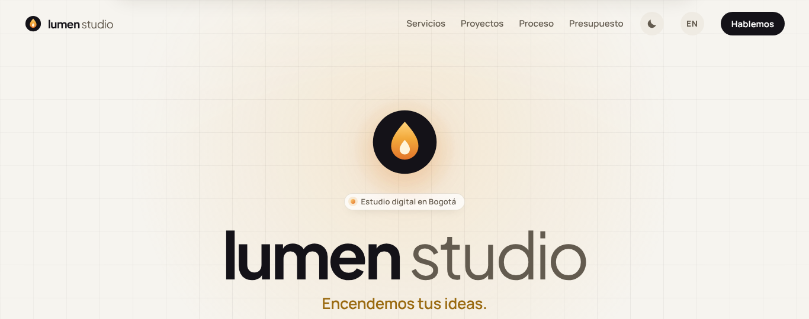

Detrás del código
El
modo
claro
nace
del
farol
Bloque
a
bloque
,
desde
la
luz
Y
para
volver
,
se
rompe
Pruébalo
en
nuestra
web
🔒
lumenestudio.tech


js/
main.js
1c · modo claro
Encendemos
tus
ideas.
Lumen Studio
· lumenestudio.tech